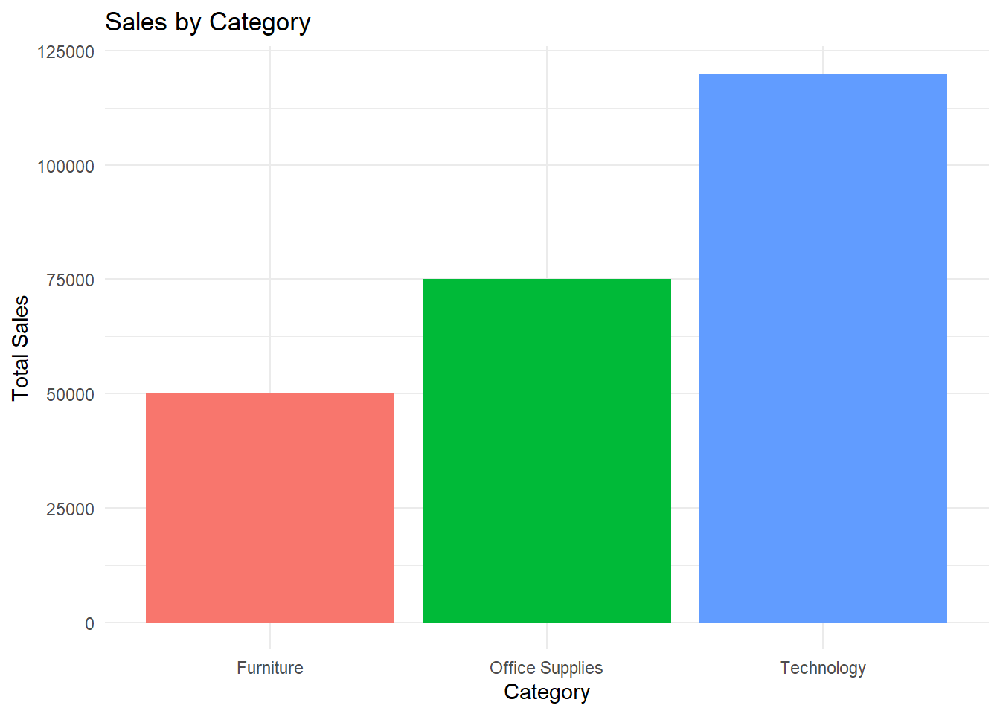
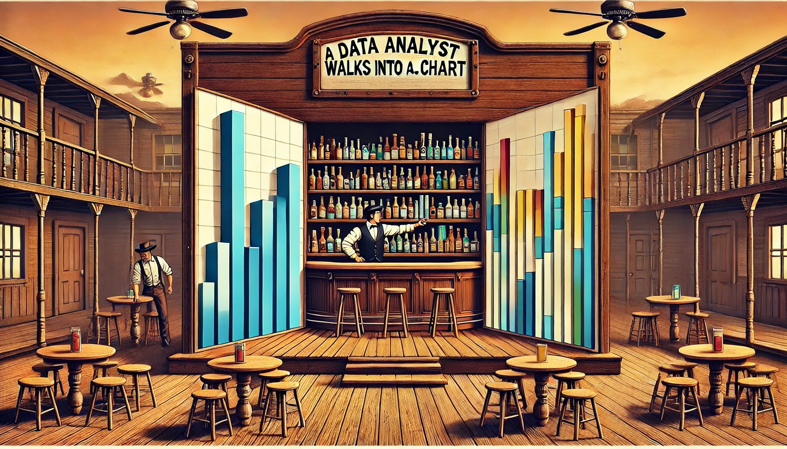
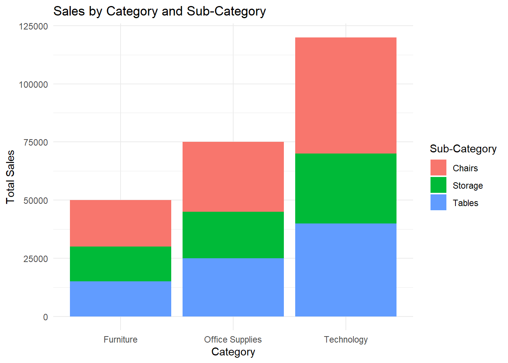
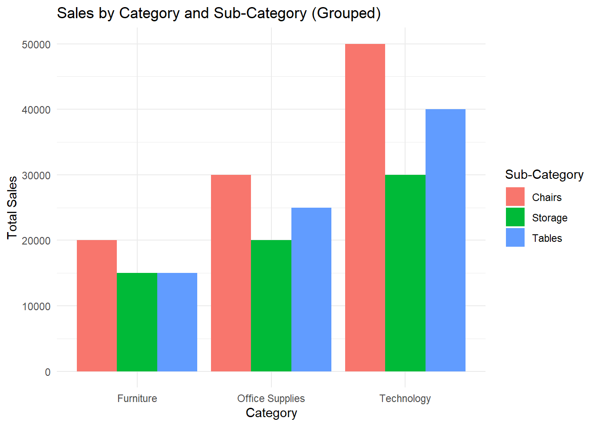
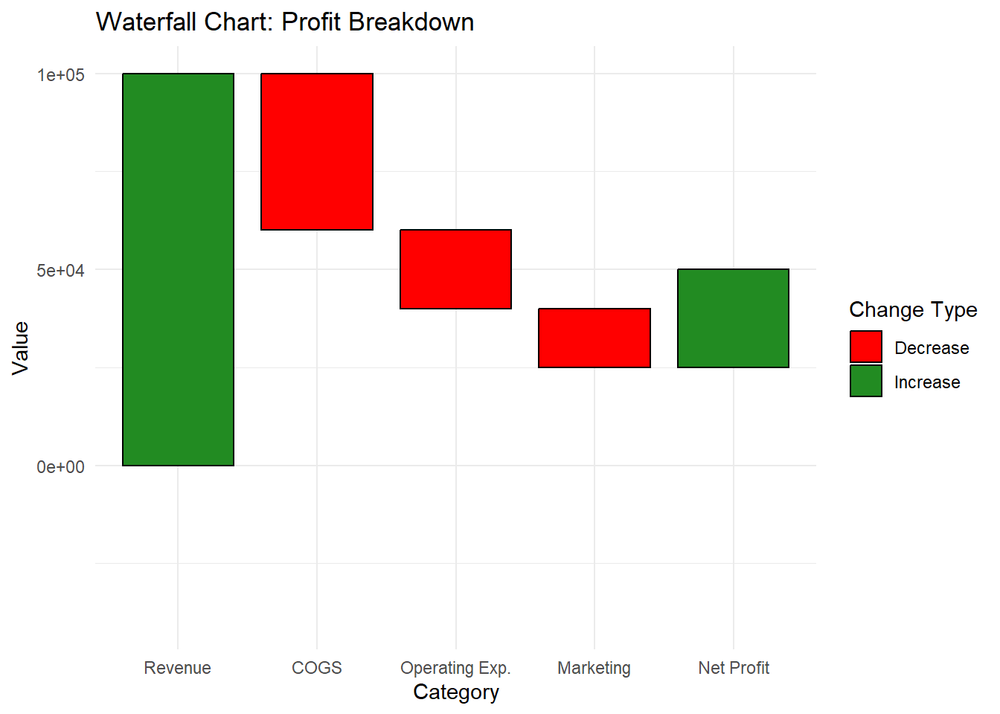
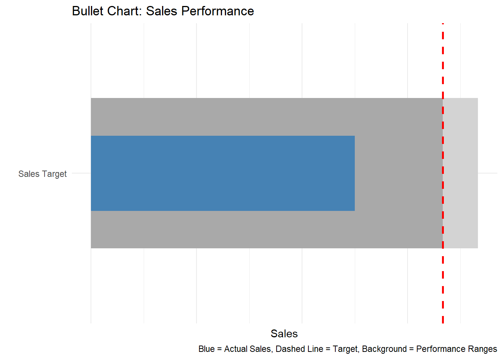
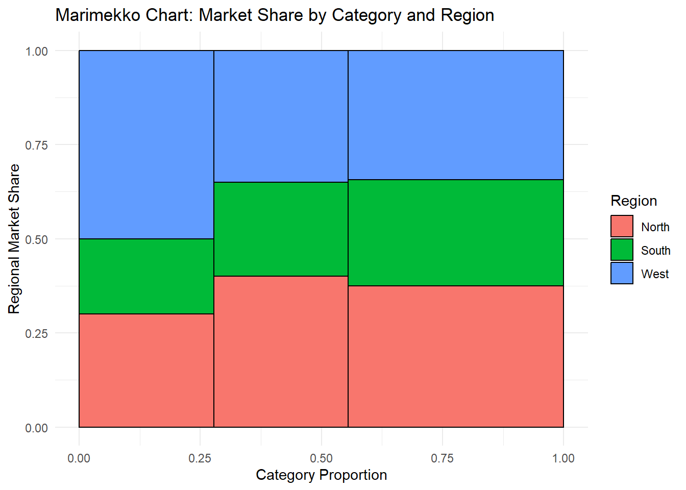

A Data Analyst Walks Into a Bar… Chart

Why Are Bar Charts So Common?
A data analyst walks into a bar… chart. It’s the most familiar, widely used visualization out there—reliable, straightforward, and effective. But just like a well-poured drink, the details matter.
Bar charts are the workhorse of data visualization. They’re everywhere in business reports, dashboards, and presentations because they are:
✔ Easy to read – We instinctively compare bar lengths.
✔ Flexible – They work for both absolute values and comparisons.
✔ Scalable – From simple to complex, bar charts can handle large datasets.
But here’s the thing—not all bar charts are created equal. Misuse them, and they can mislead, confuse, or overwhelm the audience.
So, before we start stacking, grouping, or flipping bars around, let’s take a step back and explore:
🔹 Why bar charts work so well.
🔹 Where they shine—and where they fail.
🔹 How to avoid the biggest bar chart mistakes.
Because in data visualization, just like in the Wild West, knowing the right tool for the job makes all the difference.
Core Bar Chart Types: How & When to Use Them
Bar charts may seem simple, but they come in many flavors—and choosing the right one can make or break your visualization. Each variation serves a different purpose, and using the wrong one can lead to misinterpretation or clutter.
Let’s walk through the core types of bar charts, when to use them, and where they often go wrong.
📊 Standard Bar Chart & Column Chart – The Classic Workhorses
✔ What they are:
Bar Chart – A horizontal representation of categorical data.
Column Chart – A vertical version of the bar chart, often used for sequential categories like months or years.
✔ Best for:
Comparing discrete categories (e.g., Sales by Region, Expenses by Department).
Ranking items (e.g., Top 10 Products by Revenue).
Tracking sequential data (Column Chart works better for monthly trends).
❌ Common mistakes:
Too many bars – Overcrowding kills readability.
Random sorting – Always order bars logically (by value or categorical sequence).
Not starting at zero – A truncated y-axis distorts comparisons.
Using a column chart for non-sequential categories – If there’s no natural order, a horizontal bar chart is often better.
🔀 Variations:
Column Chart (Vertical Bar Chart) – Great when categories follow a natural order (e.g., time-based data).
Lollipop Chart – A more modern and minimalist version of a bar chart, useful when many bars have similar values.
🆚 Better alternatives?
If the number of categories is too large, consider a dot plot.
- If you need to track changes over time, a line chart is often clearer than a column chart.
📊 Stacked Bar Chart – A Part-to-Whole Breakdown
✔ What it is: A standard bar chart where each bar is divided into segments representing different subcategories.
✔ Best for: Showing proportions within a category (e.g., Revenue by Region split by Product Type).
❌ Common mistakes:
Too many segments make comparisons hard.
Using too many colors (confuses the audience).
Hard to compare segment values across bars unless one stays constant.
🔀 Variations:100% Stacked Bar Chart (forces each bar to sum to 100%, good for relative comparisons).
🆚 Better alternatives? If exact values matter, grouped bar charts or treemaps might work better.

📊 Grouped Bar Chart – Side-by-Side Comparisons
✔ What it is: Bars are placed next to each other within each category instead of stacked.
✔ Best for: Comparing multiple series across categories (e.g., Monthly Sales by Product Type).
❌ Common mistakes:
Too many groups make it unreadable.
Bars too close or too far apart, making comparisons difficult.
🔀 Variations:Clustered Bar Chart (same concept, different naming).
🆚 Better alternatives? If comparing trends, consider line charts instead.

📊 Waterfall Chart – Showing Change Step by Step
✔ What it is: A modified bar chart where each bar represents a step in a cumulative total (e.g., revenue breakdown).
✔ Best for: Showing incremental changes (e.g., Profit Breakdown: Revenue → Costs → Net Profit).
❌ Common mistakes:
Not using clear labels (hard to follow the flow).
Using it for data that doesn’t have a logical step-by-step progression.
🔀 Variations:Bridge Chart (another name for the same concept).
🆚 Better alternatives? For simple before/after comparisons, use a standard bar chart.

📊 Bullet Chart – A Smarter KPI Tracker
✔ What it is: A compact variation of a bar chart that includes targets, benchmarks, and actual values in one visual.
✔ Best for: Comparing performance against a goal (e.g., Sales Target vs. Actual Sales).
❌ Common mistakes:
Overloading with too many comparisons.
Using colors that don’t clearly indicate progress.
🔀 Variations:Sometimes combined with bar-in-bar comparisons.
🆚 Better alternatives? If you need more precision, consider a simple table with conditional formatting.

📊 Mekko (Marimekko) Chart – When Categories Have Different Weights
✔ What it is: A bar chart where both height and width carry meaning (often used for market share analysis).
✔ Best for: Visualizing distributions across two dimensions (e.g., Market Size by Region and Product).
❌ Common mistakes:
Difficult to read without labels.
Not intuitive for casual users.
🔀 Variations:Also called Mosaic Chart.
🆚 Better alternatives? If only one variable needs emphasis, a stacked bar chart is easier to interpret.

Final Thoughts on Bar Chart Variants
Bar charts may seem basic, but choosing the right type can make or break your visualization.
✔ Standard bar charts are great for comparisons, but sorting matters.
✔ Stacked bars work for part-to-whole, but too many segments can get messy.
✔ Grouped bars help compare series, but too many groups hurt readability.
✔ Waterfalls explain changes, but only if the steps make logical sense.
✔ Bullet charts track performance, but don’t overcomplicate them.
✔ Mekko charts show complex relationships, but can confuse casual viewers.
Choosing the right one depends on the story you want to tell.
When to Use Bar Charts (And When Not To!)
Bar charts are everywhere in data visualization, but just because they’re common doesn’t mean they’re always the best choice. While they excel at comparing categorical values, they can quickly become misleading or ineffective when used incorrectly.
Let’s explore:
✔ When bar charts work best
❌ When they fail
🔄 What alternatives to consider in those cases
✔ When to Use Bar Charts
✅ 1. Comparing discrete categories
Best for: Sales by Region, Expenses by Department, Top 10 Products, etc.
Why: Bars make it easy to compare absolute values across distinct groups.
✅ 2. Ranking items in order
Best for: Showing highest to lowest performance, sorting KPIs, revenue leaders, etc.
Why: Sorted bars highlight the biggest and smallest contributors instantly.
✅ 3. Showing part-to-whole relationships (stacked bars)
Best for: Market share, budget breakdowns, sales by product category.
Why: Allows for relative comparison while still showing absolute values.
⚠ Caution: If segment sizes are important, a treemap might be better.
✅ 4. Tracking categorical changes over time (column charts)
Best for: Monthly revenue by category, yearly budget comparisons.
Why: Works well if each time period is distinct and does not require trend analysis.
⚠ Caution: If tracking smooth trends, a line chart is more effective.
❌ When Not to Use Bar Charts
🚫 1. When comparing continuous trends over time
Bad example: Monthly sales performance over several years in a bar chart.
Why: Bars force readers to compare discrete blocks, while trends are best visualized as a continuous flow.
✅ Use a line chart instead!
🚫 2. When there are too many categories
Bad example: A bar chart with 50+ products, making it unreadable.
Why: Bars become tiny and difficult to compare.
✅ Consider a dot plot or small multiples!
🚫 3. When exact values matter more than shape
Bad example: A bar chart showing precise financial figures where small differences matter.
Why: Bars make it hard to see exact values at a glance.
✅ Use a table with conditional formatting instead!
🚫 4. When showing hierarchy or nested proportions
Bad example: A stacked bar chart with too many segments, making it unreadable.
Why: The eye struggles to compare part-to-whole relationships when segments are misaligned.
✅ Use a treemap or Marimekko chart instead!
🔄 Alternatives to Bar Charts
📌 Line Charts – When tracking trends over time.
📌 Dot Plots – When comparing many categories.
📌 Treemaps – When showing hierarchical proportions.
📌 Heatmaps – When displaying complex categorical relationships.
Final Thoughts
Bar charts are one of the most versatile tools in data visualization, but choosing the right variation and knowing when to use an alternative can make all the difference.
✔ Use bar charts when comparing discrete categories, ranking items, or showing part-to-whole relationships.
❌ Avoid them for time series trends, highly detailed comparisons, and hierarchical structures.
🔄 Always consider whether another visualization type tells the story more effectively!
Pro Tips & Best Practices for Bar Charts
Bar charts are one of the most intuitive and widely used chart types, but small design mistakes can easily distort insights or make the chart harder to read. Here are some best practices to ensure your bar charts communicate data effectively and accurately.
✔ 1. Always Start the Axis at Zero
❌ Bad Example: A bar chart with a truncated y-axis (starting at a non-zero value).
- Why it’s misleading: It exaggerates small differences, making them look much larger than they actually are.
✅ Best Practice: Always set the y-axis to start at zero, ensuring fair comparisons.
✔ 2. Sort Bars in a Logical Order
❌ Bad Example: Randomly ordered categories.
- Why it’s bad: Viewers struggle to compare values quickly.
✅ Best Practice: Sort bars by value (descending order) or logical sequence.
✔ 3. Avoid Overcrowding with Too Many Bars
❌ Bad Example: A bar chart with 50+ categories, making bars unreadable.
- Why it’s bad: Cluttered bars make comparisons difficult.
✅ Best Practice:
Use dot plots if there are too many categories.
Consider grouping categories into “Other” when there are many small values.
✔ 4. Be Careful with Stacked Bar Charts
❌ Bad Example: A stacked bar chart with too many segments, making it impossible to compare categories.
- Why it’s bad: Only the first segment (bottom bar) is easy to compare, while the rest become confusing.
✅ Best Practice: Use stacked bars only when comparing part-to-whole relationships.
- If comparing across multiple categories, grouped bar charts are clearer.
✔ 5. Label Bars When Possible
❌ Bad Example: A chart with no labels, forcing users to rely on a separate legend.
- Why it’s bad: Makes interpretation slower and less intuitive.
✅ Best Practice: Use direct labeling instead of legends when feasible.
Final Thoughts
✔ Start axes at zero to avoid distorting differences.
✔ Sort bars logically to improve readability.
✔ Limit the number of bars to prevent clutter.
✔ Use stacked bars wisely—consider grouped bars or alternatives.
✔ Label bars directly instead of relying on a separate legend.
By following these best practices, bar charts remain clear, effective, and honest representations of data.
Conclusion
Bar charts are simple yet powerful tools for comparing categories, but design choices can make or break their effectiveness. By following best practices, we can ensure they remain clear, accurate, and easy to interpret.
🎯 Key Takeaways
✔ Bar charts excel at comparisons – They are ideal for ranking, part-to-whole relationships, and categorical breakdowns.
✔ Column charts work better for time-based data – If the data represents months, years, or sequential categories, a vertical column chart is often better.
✔ Sorting matters – Always order bars logically, either by value (descending) or a natural sequence like time or category hierarchy.
✔ Avoid overcrowding – Too many bars? Use a dot plot, small multiples, or group smaller categories into “Other.”
✔ Stacked bars should be used with care – If precise comparisons between segments are needed, consider a grouped bar chart or a treemap instead.
✔ Always start axes at zero – Truncated axes distort comparisons, making differences appear larger than they actually are.
✔ Label directly when possible – Direct labels reduce cognitive load, making the chart easier to read.
🚀 Choosing the Right Chart
Before defaulting to a bar chart, ask yourself:
✅ Do I need to compare categories? – If yes, bar charts work well.
✅ Am I comparing trends over time? – Use a line chart instead.
✅ Do I have too many categories? – Consider dot plots or treemaps.
✅ Is part-to-whole important? – Use stacked bars but be mindful of readability.
✅ Am I tracking a goal? – A bullet chart might be more effective.
🔄 What’s Next?
This was just the first episode in the Anatomy of a Chart series! Next, we’ll dive into:
📈 Episode 2: Line-Based Charts – When to Use Trends and When to Avoid Them
Where we’ll cover:
🔹 When to use line charts vs. area charts.
🔹 Common mistakes with line charts.
🔹 Best practices for trend visualization.
Stay tuned for the next installment! 🚀